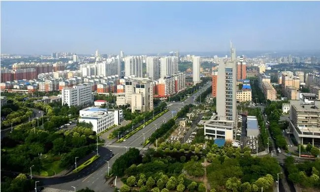

|  | ||||
我的故乡——新郑 计算机类2401班刘润青 |
||||
| 历史沿革 | 历史人物 | 风景名胜 | 特色美食 | 荣誉称号 |
| 新郑市，河南省辖县级市，由郑州市代管，位于河南省中部、郑州市南部，地处北纬34°16′~34°39′，东经113°30′~113°54′之间，属暖温带大陆性季风气候，气候温和，光热充足，总面积873平方千米。截至2022年末，新郑市常住人口120.37万人。 截至2023年6月，新郑市辖3个街道、9个镇、1个乡， 市人民政府驻新华路街道人民路186号。 新郑市历史悠久，有“黄帝故里”之称；仰韶文化中晚期，新郑为有熊国；龙山文化中期，新郑为祝融氏之国；夏商时期，新郑为夏都、商都京畿；西周，新郑为郐国；春秋为郑国，战国时期韩国迁都新郑，将郑县改为新郑县，此后建制多用新郑一名；1994年5月，经国务院批准撤销新郑县，设立县级新郑市。新郑市处于承东启西、连接南北的“黄金十字路口”，交通便利，史称“咽喉九州”之地。京广铁路、京广高铁、京港澳高速公路、107国道等交通干线贯穿全境，南水北调、西气东输等重点工程穿境而过，区域航空枢纽郑州新郑国际机场位于新郑东北。新郑有黄帝故里景区、裴李岗遗址、郑王陵博物馆、新郑博物馆、郑韩故城等历史文化景点，也有始祖山景区、黄帝古枣园、双鹤湖中央公园等自然旅游景区。 2021年，新郑市完成地区生产总值793.3亿元，同比增长5.0%；第一、二、三产业增加值占地区生产总值的比重分别为3.6%、41.5%和54.9%；农村居民人均可支配收入26879元，人均生活消费支出23113元；城镇居民人均可支配收入38950元，人均生活消费支出23752元。 |